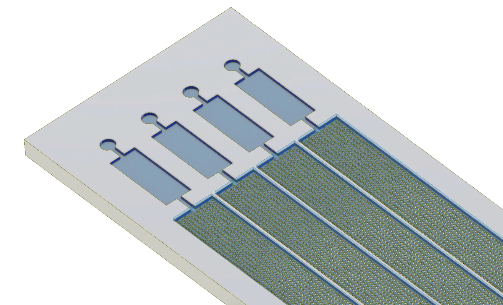
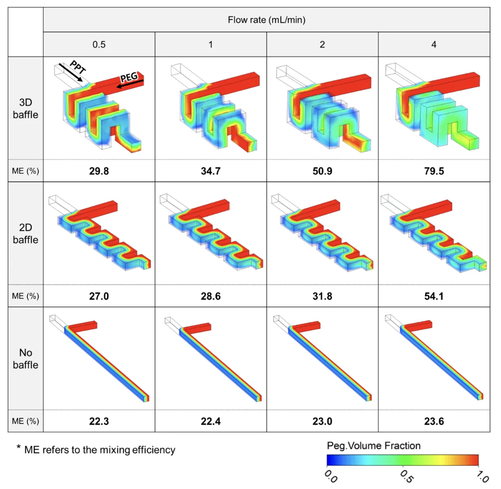
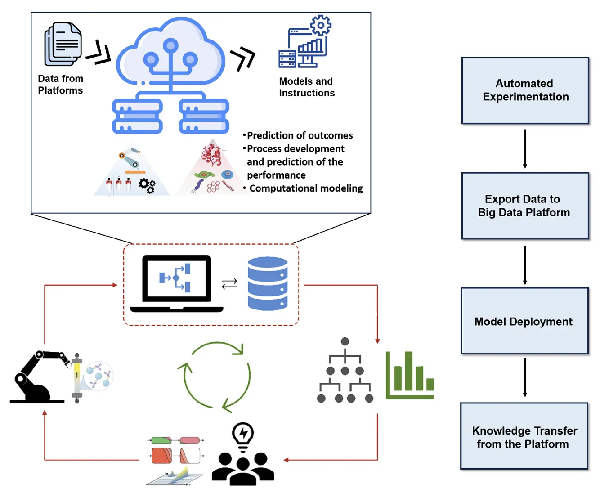
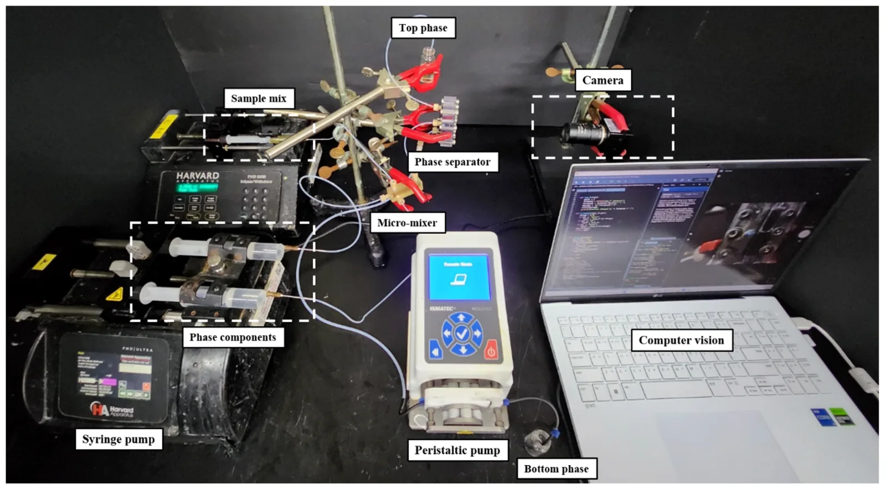
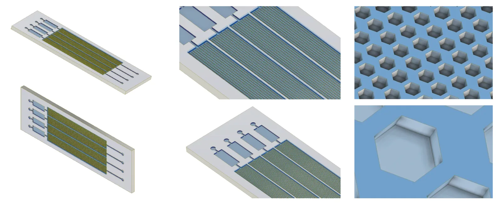

Microfluidic design
Chip architectures, multiple inlet and outlet configurations, reaction chambers and engineered microstructures.
Designing intelligent miniaturized systems for advanced biological applications.

Smart Biochip Engineering at SIBES explores how microchannel architecture, miniaturized reactions, integrated sensing and computational approaches can enable precise microscale biological analysis.
Research interests span computer-aided design, CFD and multiphysics simulation, device materials and fabrication strategies, fluid transport and mixing, optical or electrochemical detection, and automated device control.
Original CAD renderings are presented as design concepts; they are not representations of fabricated or validated diagnostic devices.
Chip architectures, multiple inlet and outlet configurations, reaction chambers and engineered microstructures.

Evaluating microchannel geometries, multiphase flow and concentration distributions.

Investigating material and fabrication routes, bonding, module assembly and testing.

Exploring computer-vision-assisted control, pumps, valves and data-informed fluidic operation.
Exploring interfaces for electrochemical, optical and other analytical readouts.

Molecular diagnostics, biosensing, miniaturized bioprocessing and biochemical analysis.